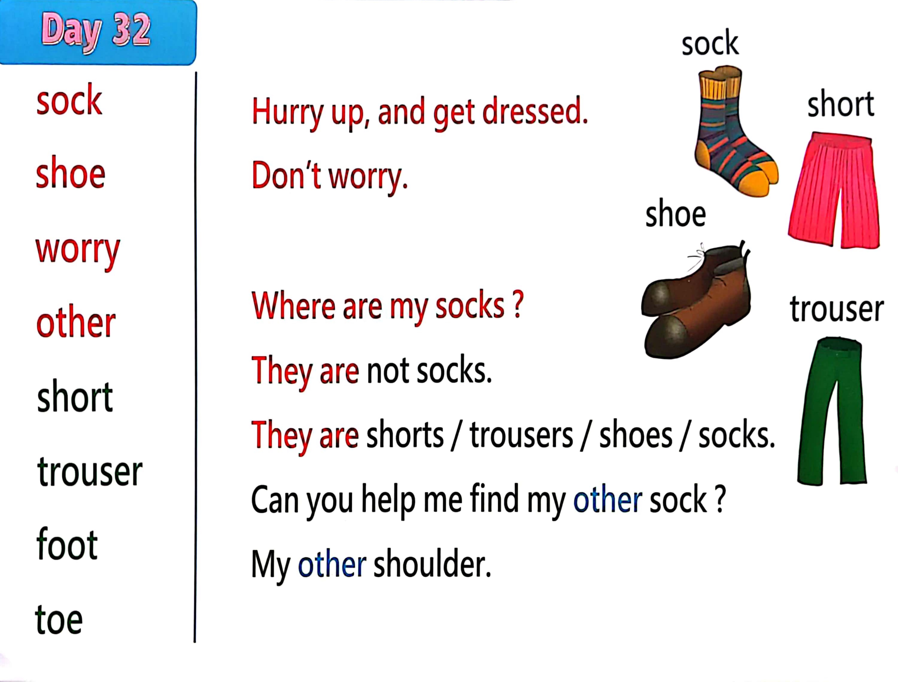

Day 32
Unit 9 · story
教材重点
教材重点依据网盘文件“第二级蓝色每日打卡全.pdf”，第 33 页对应 Day 32；保留文字整理并同时提供原图。
网盘教材重点原图 · PDF 第 33 页对应 Day 32
sock shoe worry other short trouser foot toe Hurry up, and get dressed. Don’t worry. Where are my socks ? They are not socks. They are shorts / trousers / shoes / socks. Can you help me find my other sock ? My other shoulder. sock short shoe trouser

Unit 9 · story · 4–6岁
trousers · shoes · hello · say
Hello, hello, hello, hello, everyone. Hello.
台词本为机器转写，可能存在识别误差；不等同于视频逐字原声。
详细内容
Part 1 核心词汇
必须掌握 · 4 个Part 2 跟读句型与句型拓展
左侧保留台词本原句，右侧为替换练习；拓展内容不是视频逐字台词。
Hello, hello, hello, hello, everyone. Hello.
Everyone travel everywhere?
Everyone say, hello. Everyone.
Socks, shoes, trousers and shorts.
Hello, how are you stay.
Part 3 台词本全文
来源：第2级台词本 · 032.Wow!Blue - Unit 9 - part 2 story_9_2.pdf。以下保留网盘 PDF 的机器转写文本，仅清理了文件路径页眉和空行。
Hello, hello, hello, hello, everyone. Hello.
Everyone travel everywhere?
Everyone say, hello. Everyone.
Socks, shoes, trousers and shorts.
Hello, how are you stay.
Hurry up, get dressed. Oh, maggie, don't worry, I'm very fast at getting dressed.
Because I know that all my clothes are in my wardrobe, okay?
Right.
Let me start down here. What goes on my feet are my toes, socks, OK?
I'l
l
just get my, where are my socks Oh no, they're not socks. That's not socks. No. Where are my socks?
Hey, oh, oh, dear, they're not socks. No. Where are my socks? Oh, hey,
Look, HA, I found a sock. Yeah.
Wait a minute, I need two socks, silly me, oh,
Look, my wardrobe's empty. Where's my other sock Oh no.
Who made this man so silly? Steve, you made the mess. Really. You hurry.
Okay. Can you help me find my other sock.
He must be here somewhere. Oh, stay past night now, maggie, I'm trying to find my other sock.
Oh, what's that under the table? God, what is it Is it my missing sock? No, what is it.
Oh, how look.
They are shorts, say with me, go on.
They are short, louder, they are short, louder, they are short. Oh,
Oh, I don't need shorts. I'm looking for my other sock, oh, what's that over there?
What is it do you know is it my other sock? No, I don't think so.
Oh look, oh my trousers, what are they? Yeah?
They are trousers, hey, say, with me up here, say they are trousers, and down here.
They are trousers. They are trousers.
They are trousers, air, and I need a pair of trousers, so I'm going to put them on.
But I still need to find.
My other socks stay, stay not now. Maggie, I'm looking for my other sock.
Oh, there's something there under the bed.
/
-
/2/032.Wow!Blue - Unit 9 - part 2 story_9_2.txt[2022/3/29
星期二
6:42:44]
Oh, I can see something, oh, but oh dear.
Oh, have not my missing sock. No.
What are they here They are shoes, so say, with me, come on, they are shoes.
They are shoes, and again, they are shoes, less time, they are shoes. Well, I need shoes, but.
Still haven't found my missing sock. Well,
Have got my shoes and my trousers.
But where is my other sock? HO, where is my other sock Can you see it? Yeah, what.
You can, okay?
What.
You can see it too well, where is my other song It's there.
Where where's on your shoulder I know I found this sock.
It's on your shoulder, maggie, there's nothing on my shoulder, no,
Shoulder.
What today.
They are socks. Yes. So say when you come on.
They are socks, they are socks, and again,
Day, all sucks one last time, they all socks. Hey, so.
I've got my socks, my trousers, my shoes.
And my pajamas, oh dear, I've got to get dressed and bye for now, see next time.
Bye, bye.